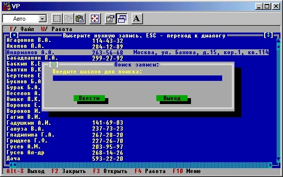

|
|
|
|
Режим поиска записи
Для поиска нужной записи сформируем диалоговое окно, показанное на рис.15.12.

Рис.15.12. Окно ввода шаблона поиска
С помощью этого окна пользователь может задать несколько начальных букв, используемых как ключ для поиска записи. Получив данные из этого окна, процедура SearchItem организует поиск первой от начала коллекции строки, для которой не выполняется условие
Pattern >= Item
где Pattern - образец поиска, Item - текущая строка коллекции. Найденная строка указывается как текущая в поле Location и организуется вывод соответствующего текста в окне просмотра.
В реализации процедуры SearchItem указанная проверка осуществляется для строк, предварительно преобразованных к прописным буквам с помощью внутренней процедуры UpString, т.е. поиск игнорирует возможную разницу в высоте букв шаблона и строк коллекции.
Procedure SearchItem;
{Ищет нужный элемент}
Function UpString(s: String): String;
{Преобразует строку в верхний регистр}
var
k: Integer; begin
for k := 1 to Length(s) do
if s[k] in ['a'-.'z'] then
s[k] := chr(ord('A')+ord(s[k])-ord('a'))
else if s[k] in ['a'..'n']. then
s[k] := chr(ord('A')+ord(s[k])-ord('a'))
else if s[k] in ['р'..'я'] then
s[k] := chr(ord('P')+ord(s[k])-ord('p'));
UpString := s
end; {UpString}
var
InWin: PDialog;
R: TRect;
s: String;
p: PInputLine;
k: Word;
begin {SearchItem}
R.Assign(15,8,65,16);
InWin := New(PDialog,
Init(R,'Поиск записи:'));
with InWin do
begin
R.Assign(2,2,47,3);
p := New(PInputLine, Init(R,50));
Insert(p);
R.Assign(l,l,40;2);
Insert(New(PLabel, Init(R, 'Введите образец для поиска:',р)));
R.Assign(10,5,20,7);
Insert(New(PButton, Init(R,'Ввести',cmOk,bfDefault)));
R.Assign(25,5,35,7);
Insert(New(PButton, Init(R,'Выход',cmCancel,bfNormal)));
SelectNext(False)
end;
if DeskTop.ExecView(InWin) = cmCancel then
exit; s := p.Data;
Location := 0;
while (UpString(s) >= UpString(PString(PS.At(Location))))
and (Location < pred(PS.count)) do
inc(Location); if (Location < Delta.Y) or
(Location > Delta.Y+pred(Size.Y)) then
ScrollTo(Delta.X,Location)
else
Draw
end; {SearchItem}
|
|
|
|